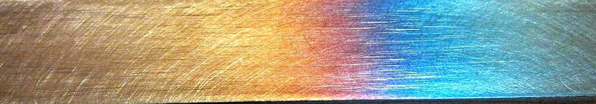

制作側の連想
「ポンド」から、十二角形の硬貨へ
店名の由来は分かりません。制作側は「ポンド」という響きから、英国の通貨の単位を連想しました。現在の1ポンド硬貨は十二角形です。そこでこのサイトは、十二角形を共通のかたちにして組み立てています。これは制作側の連想で、お店の理念・由来とは無関係です。
十二の辺
お店について、確認できたこと・まだのこと
十二角形の辺になぞらえて、12項目で整理しました。確認できているのは6項目だけで、残りは準備中です。
- 01
店名
Pond Caffe
確認済み - 02
読み
ポンドカフェ
確認済み - 03
業種
カフェ
確認済み - 04
所在地
〒861-1303
確認済み
熊本県菊池市今７２５ - 05
電話
確認済み - 06
Instagram
確認済み - 07
営業時間
準備中
確認でき次第 - 08
定休日
準備中
確認でき次第 - 09
メニュー
準備中
確認でき次第 - 10
価格
準備中
確認でき次第 - 11
ご予約
準備中
確認でき次第 - 12
駐車場
準備中
確認でき次第
焼き色の帯
金から青へ、色づく金属

金属が熱で色づく様子を写した写真です。お店の設備や提供内容を示すものではありません。
イメージ写真
コーヒーまわりの道具と豆(イメージ)

国外または撮影地不明のフリー素材です。お店のものではなく、実際の店内や提供内容を示すものでもありません。
ご案内
確認できているお店の情報
| 所在地 | 〒861-1303 熊本県菊池市今７２５ |
|---|---|
| 電話 | 0968-41-7557 |
| 営業時間 | 準備中 |
| 定休日 | 準備中 |
| ご予約 | 準備中 |
| 駐車場 | 準備中 |
| SNS | Instagram @caffe_pond |